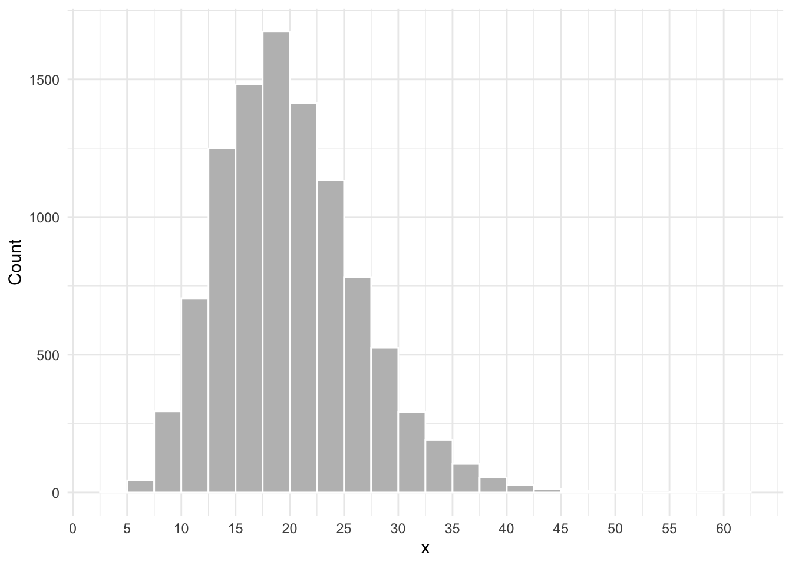
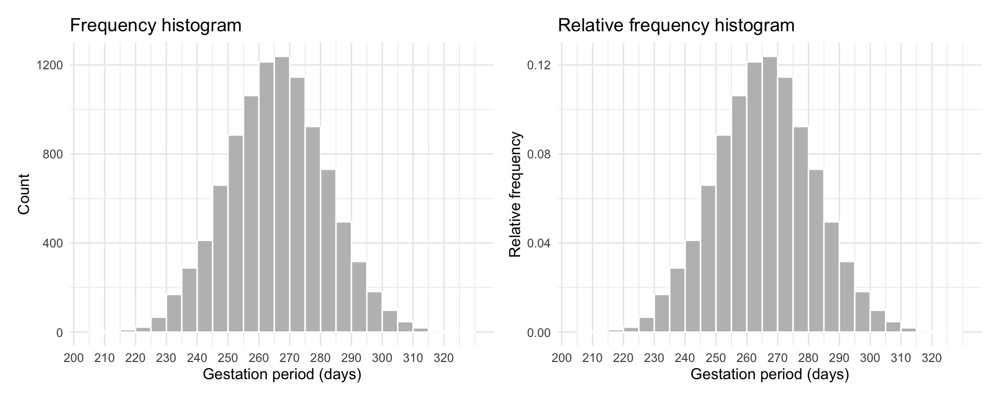

Probability as area under the curve
We cannot compute probabilities for continuous random variables in the same way as we would for a discrete set of outcomes (where we would compute the number of outcomes in the event, divided by the number of possible outcomes).
For continuous random variables, we can only compute the probability of observing a value in a given interval. For example, the probability that the hand stops in between 3 and 3.5 hours.
Consider the histogram shown below. The height of each rectangle will tell you the number of people having a value within a specific interval. For example, the number of people having a value of \(x\) between 20 and 22.5.
Proportions as areas: the density histogram
The natural gestation period for human births has a mean of about 266 days and a standard deviation of about 16 days. A group of researchers recorded the gestation period (in days) of 10,000 babies and the distribution is shown below as a frequency histogram (left panel) and relative frequency histogram (right panel).

The histogram is unimodal, with the modal interval extending from 266 to 270 days. The distribution is symmetric around the centre (266). This means that if you were the fold the histogram at 266 days, the two halves would match when superimposed.
The histogram also highlights some variability in gestation days from person to person, with some women giving birth after as low as 200 days or as high as 320 days.
Usually, histograms are drawn with the height of the rectangle for the \(j\)th interval being either the frequency (count) \(n_j\) or the relative frequency \(n_j / n\) of observations falling into that interval.
For example, for roughly 400 women the gestation period was between 240 and 245 days. If we use the relative frequency, instead, the height of the rectangle tells us the proportion of observations in that interval. In this case, the proportion of women with a gestation period between 240 and 245 days is \(400 / 10,000 = 0.04\).
We now discuss a third type of histogram called the density histogram, in which we adjust the heigh of the rectangle so that the area is equal to the relative frequency. This is accomplished by changing the height to \(n_j / (n w)\) where \(w\) is the interval width.
Why does this work? \[ area = width \cdot height = w \cdot \frac{n_j}{n w} = \frac{n_j}{n} \]
So now it is the area of the \(j\)th rectangle that tells us the proportion of observations in the \(j\)th interval.

In Figure 1(a) the proportion of women under study whose gestation period falls within any class interval is the area of the corresponding rectangle. For example the proportion of women with a gestation period between 240 and 245 days is equal to \(area = width \cdot height = 5 \cdot 0.008 = 0.04\), which matches the relative frequency histogram.
Furthermore, we can obtain the proportion of women whose gestation period falls between the limits \(a = 240\) days and \(b = 255\) days by adding the areas of all the rectangles between these limits. As the graph in Figure 1(b) tells us, the area of the shaded part is .196. Thus, the proportion of women with a gestation period between 240 and 255 days is 0.196 or 19.6% of the women in the study population.
This correspondence between area and proportions is the foundation on which the probability for continuous random variables is built. In fact, we can say that the probability that a randomly picked woman from the study population has a gestation period between 240 and 255 days is 0.196.
Also, note that the total area under a density histogram is \[ \sum \left( \frac{n_j}{n w} \cdot w \right) = \frac{\sum n_j}{n} = 1 \]
Note
Let’s now summarise what we have learned about density histograms:
the vertical scale is relative frequency / interval width
the total area under the histogram is 1
the proportion of data between \(a\) and \(b\) is the area under the histogram between \(a\) and \(b\)

In Figure 2(c) we have superimposed an approximating smooth curve on top of the density histogram. Figure 2(d) displays only the approximating smooth curve. Furthermore, we have also highlighted in green the area under that curve in between the same limit as the histogram (\(a = 240\) and \(b = 255\)) and calculated the highlighted area. That area turned out to be 0.194, which is very close to the area of 0.196 computed from the density histogram.
From this, it is quite easy to see how areas under the smooth curve in between two particular limits are in good agreement with the same areas computed using a density histogram, and thus with proportions of people in the study.
Such smooth curve is called a density curve or density function. The probability distribution of a continuous random variable \(X\) is specified in terms of its density function. We calculate the probability that the random variable \(X\) is between \(a\) and \(b\) by finding the area under the density curve between \(a\) and \(b\).
Note
Let’s now summarise what we have learned about density functions:
The probability distribution of a continuous random variable is specified in terms of a density function (i.e., a density curve).
Probabilities are obtained as areas under the density curve.
The total area under the curve is one.
This is because the total probability must be one: \(P(R_X) = 1\).
The curve is always greater than or equal to zero for all possible values of the random variable.
This is similar to saying that probabilities cannot be negative.
Last week we said that the probability distribution of a random variable \(X\) provides a concise representation of the random variable in terms of the set of all the possible values it can take and the corresponding probabilities. Clearly, this gives an immediate global picture of the random variable.
Note
Probability distribution for a continuous random variable
The probability distribution of a continuous random variable \(X\) provides the possible values of the random variable and their corresponding probability densities.
A probability distribution can be in the form of a graph or mathematical formula.
The density curve is the graphical representation of the probability distribution, while the density function is the mathematical formula of the curve.